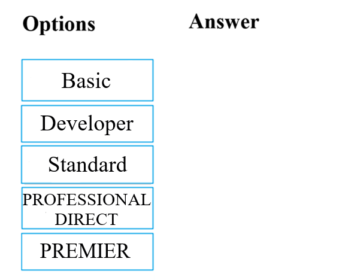

DRAG DROP (Drag and Drop is not supported)
Your company
intends to subscribe to an Azure support plan.
The support plan must allow for
new support requests to be opened.
Which of the following
are support plans that will allow this? Answer by dragging the correct option from the list to the
answer area.

- See Explanation section for answer.
Answer(s): A
Explanation:
References:
https://azure.microsoft.com/en-us/support/plans/
Reference:
References:
https://azure.microsoft.com/en-us/support/plans/
Your company has datacenters in Los Angeles and New York. The company has a Microsoft
Azure subscription.
You are configuring the two datacenters as geo-clustered sites for site
resiliency. You need to recommend an Azure storage redundancy option.
You have the following data
storage requirements:
-Data must be stored on multiple nodes.
-Data must be stored on nodes
in separate geographic locations.
-Data can be read from the secondary location as well as from the
primary location
Which of the following Azure stored redundancy options should you recommend?
- Geo-redundant storage
- Read-only geo-redundant storage
- Zone-redundant storage
- Locally redundant storage
Answer(s): B
Explanation:
RA-GRS allows you to have higher read availability for your storage account by providing “read
only” access to the data replicated to the secondary location. Once you enable this feature, the
secondary location may be used to achieve higher availability in the event the data is not
available in the primary region. This is an “opt-in” feature which requires the storage account be
geo-replicated.
References:
https://docs.microsoft.com/en-us/azure/storage/common/storage-redundancy
https://docs.microsoft.com/en-us/azure/storage/common/storage-redundancy-grs#read-access-geo-redundant-storage
Reference:
References:
https://docs.microsoft.com/en-us/azure/storage/common/storage-redundancy
https://docs.microsoft.com/en-us/azure/storage/common/storage-redundancy-grs#read-access-geo-redundant-storage
Note: The question is included in a number of questions that depicts the identical
set-up. However, every question has a distinctive result. Establish if the solution satisfies the
requirements.
Your company’s Azure subscription includes a Basic support plan.
They would
like to request an assessment of an Azure environment’s design from Microsoft. This is, however, not
supported by the existing plan.
You want to make sure that the company subscribes to a support
plan that allows this functionality, while keeping expenses to a minimum.
Solution: You
recommend that the company subscribes to the Premier support plan. Does the solution meet the goal?
- Yes
- No
Answer(s): B
Reference:
References:
https://azure.microsoft.com/en-gb/support/plans/
Note: The question is included in a number of questions that depicts the identical
set-up. However, every question has a distinctive result. Establish if the solution satisfies the
requirements.
You are tasked with deploying Azure virtual machines for your company. You need
to make use of the appropriate cloud deployment solution.
Solution: You should make use of
Software as a Service (SaaS).
Does the solution meet the goal?
- Yes
- No
Answer(s): B